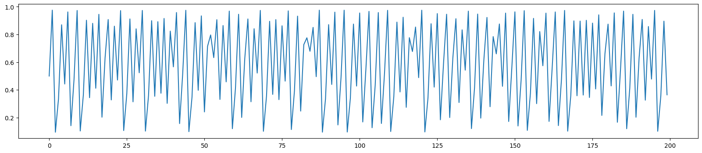

Quantum Reservoir Computing: Logistic map#
1. Install and import (quantum)reservoirpy if needed#
This notebook shows how to use a quantum reservoir for time series prediction. It uses quantumreservoirpy which follows the standard API from reservoirpy. The underlying procedures are documentet in this preprint.
import subprocess
import sys
try:
import quantumreservoirpy # noqa
print("quantumreservoirpy is already installed.")
except ImportError:
print("quantumreservoirpy is not installed. Installing now...")
subprocess.check_call([sys.executable, "-m", "pip", "install", "quantumreservoirpy"])
try:
import reservoirpy # noqa
print("reservoirpy is already installed.")
except ImportError:
print("reservoirpy is not installed. Installing now...")
subprocess.check_call([sys.executable, "-m", "pip", "install", "reservoirpy"])
quantumreservoirpy is already installed.
reservoirpy is already installed.
2. Import other necessary modules#
import matplotlib.pyplot as plt
import numpy as np
from qiskit_aer import AerSimulator
from quantumreservoirpy.partialmeasurement import PartialMeasurement
from quantumreservoirpy.stabilizer import Stabilizer
from quantumreservoirpy.util import create_shifted_array
from reservoirpy.datasets import logistic_map
from reservoirpy.nodes import Reservoir
from sklearn.linear_model import Ridge
from sklearn.model_selection import TimeSeriesSplit
3. We want to “learn” the logistic map from observations.#
ts = logistic_map(200, r=3.9, x0=0.5).flatten()
plt.figure(figsize=(20, 4))
_ = plt.plot(ts)

4. The setup#
We use spatial multiplexing by using 10 reservoirs. In addition we use temporal multiplexing, i.e., we train/predict using the last 10 observations. Each reservoir has 3 qubits, where 2 are measured at each time step. We also use higher order observables set by the degree.
num_reservoirs = 10
num_qubits = 3
num_meas = 2
degree = num_meas
timeplex = 10
The classical reservoir should have the same number of neurons as the number of observables the quantum reservoirs use. We use the en/decoding of classical data using cosets of a given stabilizer.
res = {}
num_neurons = num_reservoirs * (2**num_meas - 1)
res["classical"] = Reservoir(num_neurons, lr=0.5, sr=0.9)
res["quantum_part"] = PartialMeasurement(
num_qubits,
num_meas,
backend=AerSimulator(),
degree=degree,
num_reservoirs=num_reservoirs,
)
res["quantum_stab"] = Stabilizer(
num_qubits,
num_meas,
backend=AerSimulator(),
degree=degree,
num_reservoirs=num_reservoirs,
)
5. Helper functions to fit the model and run predictions#
def fit_model(model, res_states, series, WARMUP=0.3, timeplex=1):
warmup = int(len(series) * WARMUP)
X = res_states[warmup:-1]
y = series[warmup + 1 :]
if timeplex > 1:
X = create_shifted_array(X, timeplex)
model.fit(X, y)
return model, X, y
def run_prediction(model, res_states, timeplex=1):
X = np.copy(res_states)
if timeplex > 1:
X = create_shifted_array(X, timeplex)
X = X[-1, :]
X = X.reshape((1, -1))
return model.predict(X)
6. Fit the model with linear regression and run the predictions#
This will take some time!
prediction = {}
tscv = TimeSeriesSplit()
for method in ["classical", "quantum_part", "quantum_stab"]:
for i, (train_index, test_index) in enumerate(tscv.split(ts)):
if not i == 2:
continue
X_train = ts[train_index]
X_test = ts[test_index]
num_pred = len(test_index)
linreg = Ridge(alpha=1e-7)
if method == "classical":
states = res[method].run(X_train.reshape(-1, 1), reset=True)
linreg, X, y = fit_model(linreg, states, X_train)
else:
states = res[method].run(timeseries=X_train, shots=1e3, precision=1e-2)
linreg, X, y = fit_model(linreg, states, X_train, timeplex=timeplex)
score = linreg.score(X, y)
print("score[", method, "]=", score)
firsttime = True
prediction[method] = X_train
for j in range(num_pred):
print(j, "/", num_pred)
if method == "classical":
if firsttime:
states = res[method].state()
else:
states = res[method].run(prediction[method][-1])
tmp = run_prediction(linreg, states, 1)
else:
states = res[method].run(
prediction[method][-2 * int(timeplex) :], shots=1e3, precision=1e-2
)
tmp = run_prediction(linreg, states, timeplex)
prediction[method] = np.append(prediction[method], tmp)
firsttime = False
Running Reservoir-0: 100%|█████████████████████████████████████████████████████████████████████████████████████████████████████████████████████████████████| 101/101 [00:00<00:00, 7702.83it/s]
score[ classical ]= 0.9971940011772895
0 / 33
1 / 33
Running Reservoir-0: 100%|█████████████████████████████████████████████████████████████████████████████████████████████████████████████████████████████████████| 1/1 [00:00<00:00, 3300.00it/s]
2 / 33
Running Reservoir-0: 100%|█████████████████████████████████████████████████████████████████████████████████████████████████████████████████████████████████████| 1/1 [00:00<00:00, 2721.81it/s]
3 / 33
Running Reservoir-0: 100%|█████████████████████████████████████████████████████████████████████████████████████████████████████████████████████████████████████| 1/1 [00:00<00:00, 2613.27it/s]
4 / 33
Running Reservoir-0: 100%|█████████████████████████████████████████████████████████████████████████████████████████████████████████████████████████████████████| 1/1 [00:00<00:00, 2534.32it/s]
5 / 33
Running Reservoir-0: 100%|█████████████████████████████████████████████████████████████████████████████████████████████████████████████████████████████████████| 1/1 [00:00<00:00, 1689.21it/s]
6 / 33
Running Reservoir-0: 100%|█████████████████████████████████████████████████████████████████████████████████████████████████████████████████████████████████████| 1/1 [00:00<00:00, 2657.99it/s]
7 / 33
Running Reservoir-0: 100%|█████████████████████████████████████████████████████████████████████████████████████████████████████████████████████████████████████| 1/1 [00:00<00:00, 2737.80it/s]
8 / 33
Running Reservoir-0: 100%|█████████████████████████████████████████████████████████████████████████████████████████████████████████████████████████████████████| 1/1 [00:00<00:00, 2685.21it/s]
9 / 33
Running Reservoir-0: 100%|█████████████████████████████████████████████████████████████████████████████████████████████████████████████████████████████████████| 1/1 [00:00<00:00, 2304.56it/s]
10 / 33
Running Reservoir-0: 100%|█████████████████████████████████████████████████████████████████████████████████████████████████████████████████████████████████████| 1/1 [00:00<00:00, 2704.26it/s]
11 / 33
Running Reservoir-0: 100%|█████████████████████████████████████████████████████████████████████████████████████████████████████████████████████████████████████| 1/1 [00:00<00:00, 3398.95it/s]
12 / 33
Running Reservoir-0: 100%|█████████████████████████████████████████████████████████████████████████████████████████████████████████████████████████████████████| 1/1 [00:00<00:00, 3310.42it/s]
13 / 33
Running Reservoir-0: 100%|██████████████████████████████████████████████████████████████████████████████████████████████████████████████████████████████████████| 1/1 [00:00<00:00, 325.77it/s]
14 / 33
Running Reservoir-0: 100%|█████████████████████████████████████████████████████████████████████████████████████████████████████████████████████████████████████| 1/1 [00:00<00:00, 2725.34it/s]
15 / 33
Running Reservoir-0: 100%|█████████████████████████████████████████████████████████████████████████████████████████████████████████████████████████████████████| 1/1 [00:00<00:00, 2490.68it/s]
16 / 33
Running Reservoir-0: 100%|█████████████████████████████████████████████████████████████████████████████████████████████████████████████████████████████████████| 1/1 [00:00<00:00, 2711.25it/s]
17 / 33
Running Reservoir-0: 100%|█████████████████████████████████████████████████████████████████████████████████████████████████████████████████████████████████████| 1/1 [00:00<00:00, 2273.34it/s]
18 / 33
Running Reservoir-0: 100%|█████████████████████████████████████████████████████████████████████████████████████████████████████████████████████████████████████| 1/1 [00:00<00:00, 2520.62it/s]
19 / 33
Running Reservoir-0: 100%|█████████████████████████████████████████████████████████████████████████████████████████████████████████████████████████████████████| 1/1 [00:00<00:00, 1968.23it/s]
20 / 33
Running Reservoir-0: 100%|█████████████████████████████████████████████████████████████████████████████████████████████████████████████████████████████████████| 1/1 [00:00<00:00, 2317.30it/s]
21 / 33
Running Reservoir-0: 100%|█████████████████████████████████████████████████████████████████████████████████████████████████████████████████████████████████████| 1/1 [00:00<00:00, 2505.56it/s]
22 / 33
Running Reservoir-0: 100%|█████████████████████████████████████████████████████████████████████████████████████████████████████████████████████████████████████| 1/1 [00:00<00:00, 2377.72it/s]
23 / 33
Running Reservoir-0: 100%|█████████████████████████████████████████████████████████████████████████████████████████████████████████████████████████████████████| 1/1 [00:00<00:00, 2369.66it/s]
24 / 33
Running Reservoir-0: 100%|█████████████████████████████████████████████████████████████████████████████████████████████████████████████████████████████████████| 1/1 [00:00<00:00, 1763.79it/s]
25 / 33
Running Reservoir-0: 100%|█████████████████████████████████████████████████████████████████████████████████████████████████████████████████████████████████████| 1/1 [00:00<00:00, 2880.70it/s]
26 / 33
Running Reservoir-0: 100%|█████████████████████████████████████████████████████████████████████████████████████████████████████████████████████████████████████| 1/1 [00:00<00:00, 3524.63it/s]
27 / 33
Running Reservoir-0: 100%|█████████████████████████████████████████████████████████████████████████████████████████████████████████████████████████████████████| 1/1 [00:00<00:00, 2421.65it/s]
28 / 33
Running Reservoir-0: 100%|█████████████████████████████████████████████████████████████████████████████████████████████████████████████████████████████████████| 1/1 [00:00<00:00, 3440.77it/s]
29 / 33
Running Reservoir-0: 100%|█████████████████████████████████████████████████████████████████████████████████████████████████████████████████████████████████████| 1/1 [00:00<00:00, 3477.86it/s]
30 / 33
Running Reservoir-0: 100%|█████████████████████████████████████████████████████████████████████████████████████████████████████████████████████████████████████| 1/1 [00:00<00:00, 3070.50it/s]
31 / 33
Running Reservoir-0: 100%|█████████████████████████████████████████████████████████████████████████████████████████████████████████████████████████████████████| 1/1 [00:00<00:00, 2023.30it/s]
32 / 33
Running Reservoir-0: 100%|█████████████████████████████████████████████████████████████████████████████████████████████████████████████████████████████████████| 1/1 [00:00<00:00, 2549.73it/s]
Running reservoirs: 100%|██████████████████████████████████████████████████████████████████████████████████████████████████████████████████████████████████████| 10/10 [02:17<00:00, 13.78s/it]
score[ quantum_part ]= 0.9999999999999559
0 / 33
Running reservoirs: 100%|██████████████████████████████████████████████████████████████████████████████████████████████████████████████████████████████████████| 10/10 [00:21<00:00, 2.10s/it]
1 / 33
Running reservoirs: 100%|██████████████████████████████████████████████████████████████████████████████████████████████████████████████████████████████████████| 10/10 [00:21<00:00, 2.11s/it]
2 / 33
Running reservoirs: 100%|██████████████████████████████████████████████████████████████████████████████████████████████████████████████████████████████████████| 10/10 [00:21<00:00, 2.13s/it]
3 / 33
Running reservoirs: 100%|██████████████████████████████████████████████████████████████████████████████████████████████████████████████████████████████████████| 10/10 [00:21<00:00, 2.12s/it]
4 / 33
Running reservoirs: 100%|██████████████████████████████████████████████████████████████████████████████████████████████████████████████████████████████████████| 10/10 [00:20<00:00, 2.10s/it]
5 / 33
Running reservoirs: 100%|██████████████████████████████████████████████████████████████████████████████████████████████████████████████████████████████████████| 10/10 [00:20<00:00, 2.10s/it]
6 / 33
Running reservoirs: 100%|██████████████████████████████████████████████████████████████████████████████████████████████████████████████████████████████████████| 10/10 [00:21<00:00, 2.15s/it]
7 / 33
Running reservoirs: 100%|██████████████████████████████████████████████████████████████████████████████████████████████████████████████████████████████████████| 10/10 [00:21<00:00, 2.12s/it]
8 / 33
Running reservoirs: 100%|██████████████████████████████████████████████████████████████████████████████████████████████████████████████████████████████████████| 10/10 [00:21<00:00, 2.18s/it]
9 / 33
Running reservoirs: 100%|██████████████████████████████████████████████████████████████████████████████████████████████████████████████████████████████████████| 10/10 [00:20<00:00, 2.05s/it]
10 / 33
Running reservoirs: 100%|██████████████████████████████████████████████████████████████████████████████████████████████████████████████████████████████████████| 10/10 [00:20<00:00, 2.08s/it]
11 / 33
Running reservoirs: 100%|██████████████████████████████████████████████████████████████████████████████████████████████████████████████████████████████████████| 10/10 [00:20<00:00, 2.06s/it]
12 / 33
Running reservoirs: 100%|██████████████████████████████████████████████████████████████████████████████████████████████████████████████████████████████████████| 10/10 [00:20<00:00, 2.04s/it]
13 / 33
Running reservoirs: 100%|██████████████████████████████████████████████████████████████████████████████████████████████████████████████████████████████████████| 10/10 [00:20<00:00, 2.08s/it]
14 / 33
Running reservoirs: 100%|██████████████████████████████████████████████████████████████████████████████████████████████████████████████████████████████████████| 10/10 [00:20<00:00, 2.07s/it]
15 / 33
Running reservoirs: 100%|██████████████████████████████████████████████████████████████████████████████████████████████████████████████████████████████████████| 10/10 [00:21<00:00, 2.11s/it]
16 / 33
Running reservoirs: 100%|██████████████████████████████████████████████████████████████████████████████████████████████████████████████████████████████████████| 10/10 [00:21<00:00, 2.13s/it]
17 / 33
Running reservoirs: 100%|██████████████████████████████████████████████████████████████████████████████████████████████████████████████████████████████████████| 10/10 [00:20<00:00, 2.06s/it]
18 / 33
Running reservoirs: 100%|██████████████████████████████████████████████████████████████████████████████████████████████████████████████████████████████████████| 10/10 [00:20<00:00, 2.09s/it]
19 / 33
Running reservoirs: 100%|██████████████████████████████████████████████████████████████████████████████████████████████████████████████████████████████████████| 10/10 [00:20<00:00, 2.09s/it]
20 / 33
Running reservoirs: 100%|██████████████████████████████████████████████████████████████████████████████████████████████████████████████████████████████████████| 10/10 [00:21<00:00, 2.11s/it]
21 / 33
Running reservoirs: 100%|██████████████████████████████████████████████████████████████████████████████████████████████████████████████████████████████████████| 10/10 [00:21<00:00, 2.11s/it]
22 / 33
Running reservoirs: 100%|██████████████████████████████████████████████████████████████████████████████████████████████████████████████████████████████████████| 10/10 [00:20<00:00, 2.10s/it]
23 / 33
Running reservoirs: 100%|██████████████████████████████████████████████████████████████████████████████████████████████████████████████████████████████████████| 10/10 [00:20<00:00, 2.09s/it]
24 / 33
Running reservoirs: 100%|██████████████████████████████████████████████████████████████████████████████████████████████████████████████████████████████████████| 10/10 [00:21<00:00, 2.13s/it]
25 / 33
Running reservoirs: 100%|██████████████████████████████████████████████████████████████████████████████████████████████████████████████████████████████████████| 10/10 [00:21<00:00, 2.12s/it]
26 / 33
Running reservoirs: 100%|██████████████████████████████████████████████████████████████████████████████████████████████████████████████████████████████████████| 10/10 [00:21<00:00, 2.11s/it]
27 / 33
Running reservoirs: 100%|██████████████████████████████████████████████████████████████████████████████████████████████████████████████████████████████████████| 10/10 [00:21<00:00, 2.11s/it]
28 / 33
Running reservoirs: 100%|██████████████████████████████████████████████████████████████████████████████████████████████████████████████████████████████████████| 10/10 [00:21<00:00, 2.11s/it]
29 / 33
Running reservoirs: 100%|██████████████████████████████████████████████████████████████████████████████████████████████████████████████████████████████████████| 10/10 [00:21<00:00, 2.10s/it]
30 / 33
Running reservoirs: 100%|██████████████████████████████████████████████████████████████████████████████████████████████████████████████████████████████████████| 10/10 [00:20<00:00, 2.10s/it]
31 / 33
Running reservoirs: 100%|██████████████████████████████████████████████████████████████████████████████████████████████████████████████████████████████████████| 10/10 [00:22<00:00, 2.20s/it]
32 / 33
Running reservoirs: 100%|██████████████████████████████████████████████████████████████████████████████████████████████████████████████████████████████████████| 10/10 [00:21<00:00, 2.17s/it]
Running reservoirs: 100%|██████████████████████████████████████████████████████████████████████████████████████████████████████████████████████████████████████| 10/10 [02:43<00:00, 16.38s/it]
score[ quantum_stab ]= 0.99999999999995
0 / 33
Running reservoirs: 100%|██████████████████████████████████████████████████████████████████████████████████████████████████████████████████████████████████████| 10/10 [00:25<00:00, 2.52s/it]
1 / 33
Running reservoirs: 100%|██████████████████████████████████████████████████████████████████████████████████████████████████████████████████████████████████████| 10/10 [00:25<00:00, 2.52s/it]
2 / 33
Running reservoirs: 100%|██████████████████████████████████████████████████████████████████████████████████████████████████████████████████████████████████████| 10/10 [00:26<00:00, 2.68s/it]
3 / 33
Running reservoirs: 100%|██████████████████████████████████████████████████████████████████████████████████████████████████████████████████████████████████████| 10/10 [00:25<00:00, 2.53s/it]
4 / 33
Running reservoirs: 100%|██████████████████████████████████████████████████████████████████████████████████████████████████████████████████████████████████████| 10/10 [00:26<00:00, 2.64s/it]
5 / 33
Running reservoirs: 100%|██████████████████████████████████████████████████████████████████████████████████████████████████████████████████████████████████████| 10/10 [00:24<00:00, 2.50s/it]
6 / 33
Running reservoirs: 100%|██████████████████████████████████████████████████████████████████████████████████████████████████████████████████████████████████████| 10/10 [00:25<00:00, 2.55s/it]
7 / 33
Running reservoirs: 100%|██████████████████████████████████████████████████████████████████████████████████████████████████████████████████████████████████████| 10/10 [00:25<00:00, 2.56s/it]
8 / 33
Running reservoirs: 100%|██████████████████████████████████████████████████████████████████████████████████████████████████████████████████████████████████████| 10/10 [00:24<00:00, 2.48s/it]
9 / 33
Running reservoirs: 100%|██████████████████████████████████████████████████████████████████████████████████████████████████████████████████████████████████████| 10/10 [00:25<00:00, 2.53s/it]
10 / 33
Running reservoirs: 100%|██████████████████████████████████████████████████████████████████████████████████████████████████████████████████████████████████████| 10/10 [00:25<00:00, 2.55s/it]
11 / 33
Running reservoirs: 100%|██████████████████████████████████████████████████████████████████████████████████████████████████████████████████████████████████████| 10/10 [00:25<00:00, 2.50s/it]
12 / 33
Running reservoirs: 100%|██████████████████████████████████████████████████████████████████████████████████████████████████████████████████████████████████████| 10/10 [00:25<00:00, 2.52s/it]
13 / 33
Running reservoirs: 100%|██████████████████████████████████████████████████████████████████████████████████████████████████████████████████████████████████████| 10/10 [00:25<00:00, 2.52s/it]
14 / 33
Running reservoirs: 100%|██████████████████████████████████████████████████████████████████████████████████████████████████████████████████████████████████████| 10/10 [00:25<00:00, 2.57s/it]
15 / 33
Running reservoirs: 100%|██████████████████████████████████████████████████████████████████████████████████████████████████████████████████████████████████████| 10/10 [00:25<00:00, 2.51s/it]
16 / 33
Running reservoirs: 100%|██████████████████████████████████████████████████████████████████████████████████████████████████████████████████████████████████████| 10/10 [00:24<00:00, 2.48s/it]
17 / 33
Running reservoirs: 100%|██████████████████████████████████████████████████████████████████████████████████████████████████████████████████████████████████████| 10/10 [00:24<00:00, 2.49s/it]
18 / 33
Running reservoirs: 100%|██████████████████████████████████████████████████████████████████████████████████████████████████████████████████████████████████████| 10/10 [00:24<00:00, 2.50s/it]
19 / 33
Running reservoirs: 100%|██████████████████████████████████████████████████████████████████████████████████████████████████████████████████████████████████████| 10/10 [00:25<00:00, 2.53s/it]
20 / 33
Running reservoirs: 100%|██████████████████████████████████████████████████████████████████████████████████████████████████████████████████████████████████████| 10/10 [00:24<00:00, 2.49s/it]
21 / 33
Running reservoirs: 100%|██████████████████████████████████████████████████████████████████████████████████████████████████████████████████████████████████████| 10/10 [00:25<00:00, 2.53s/it]
22 / 33
Running reservoirs: 100%|██████████████████████████████████████████████████████████████████████████████████████████████████████████████████████████████████████| 10/10 [00:25<00:00, 2.55s/it]
23 / 33
Running reservoirs: 100%|██████████████████████████████████████████████████████████████████████████████████████████████████████████████████████████████████████| 10/10 [00:25<00:00, 2.52s/it]
24 / 33
Running reservoirs: 100%|██████████████████████████████████████████████████████████████████████████████████████████████████████████████████████████████████████| 10/10 [00:24<00:00, 2.49s/it]
25 / 33
Running reservoirs: 100%|██████████████████████████████████████████████████████████████████████████████████████████████████████████████████████████████████████| 10/10 [00:24<00:00, 2.47s/it]
26 / 33
Running reservoirs: 100%|██████████████████████████████████████████████████████████████████████████████████████████████████████████████████████████████████████| 10/10 [00:25<00:00, 2.51s/it]
27 / 33
Running reservoirs: 100%|██████████████████████████████████████████████████████████████████████████████████████████████████████████████████████████████████████| 10/10 [00:24<00:00, 2.48s/it]
28 / 33
Running reservoirs: 100%|██████████████████████████████████████████████████████████████████████████████████████████████████████████████████████████████████████| 10/10 [00:25<00:00, 2.53s/it]
29 / 33
Running reservoirs: 100%|██████████████████████████████████████████████████████████████████████████████████████████████████████████████████████████████████████| 10/10 [00:25<00:00, 2.52s/it]
30 / 33
Running reservoirs: 100%|██████████████████████████████████████████████████████████████████████████████████████████████████████████████████████████████████████| 10/10 [00:25<00:00, 2.51s/it]
31 / 33
Running reservoirs: 100%|██████████████████████████████████████████████████████████████████████████████████████████████████████████████████████████████████████| 10/10 [00:25<00:00, 2.51s/it]
32 / 33
Running reservoirs: 100%|██████████████████████████████████████████████████████████████████████████████████████████████████████████████████████████████████████| 10/10 [00:25<00:00, 2.50s/it]
7. Plot the predictions#
plt.figure(figsize=(20, 4))
for method in ["classical", "quantum_part", "quantum_stab"]:
plt.plot(prediction[method], label=method)
plt.plot(X_train, "k", label="training")
plt.legend(loc="upper left")
<matplotlib.legend.Legend at 0x745752f8dc40>
8. Poincaré plot to see how well the logistic map was learned.#
fig = plt.figure()
k = 1
plt.plot(ts[k:], ts[:-k], lw=0, color="gray", marker="o", alpha=0.5)
for method in ["classical", "quantum_part", "quantum_stab"]:
tmp = prediction[method][len(X_train) :]
plt.plot(tmp[k:], tmp[:-k], "o", label=method)
plt.legend(loc="center left")
<matplotlib.legend.Legend at 0x745753016f30>